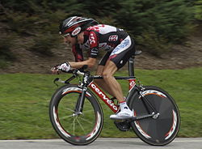

Индивидуа́льная го́нка с разде́льным ста́ртом
 Индивидуа́льная го́нка с разде́льным ста́ртом (англ. Individual time trial, ITT, разде́лка) — дисциплина шоссейного велоспорта, где гонщики стартуют и едут поодиночке в стремлении преодолеть дистанцию за минимальное время. В отличие от групповой гонки, борьба с другими спортсменами заочная, а слипстрим невозможен. Велосипед для разделки серьёзно отличается от шоссейного. Передачи более высокие, так как дистанция короче маршрута групповой гонки (менее 60 километров). Рама более аэродинамической формы, верхняя труба короче. Переднее колесо спицевое или лопастное с глубоким ободом, заднее обычно дисковое. Руль с так называемой рогаткой, держась за которую, спортсмен располагает руки значительно ближе друг к другу; за рогами над горизонтальной трубкой руля лежаки для предплечий. Седло располагается на 5—20 сантиметров выше руля. Практически такие же велосипеды используются и для триатлона. Гонщик старается сесть как можно более аэродинамично, стараясь снизить сопротивление воздуха: спина параллельна поверхности дороги, локти разведены менее чем на ширину туловища. Шлем каплевидный, без отверстий в передней части; задняя вытянутая часть прижата к спине во избежание воздушных потоков под шлемом. На спортсмена надет облегающий комбинезон, лайкровые бахилы. Также экипированы спортсмены и в командной гонке.
Виды Шоссейных велосипедов
- Классический шоссейный велосипед
- Аэро-велосипед
- "Вседорожные"
- Циклокросс
- Гревел
- Туринг
- Эндуранс
- Руль
- Тормоза
- Манетки
Шоссе́йный велосипед
Самые легкие велосипеды
| Место | Наименование | Стоимость |
|---|---|---|
| 1 | SCOTT ADDICT SL (2016) | 373 000 ₽ |
| 2 | MERIDA SCULTURA 8000-E | 154 000 ₽ |
| 3 | CUBE ATTAIN SL (2019) | 62 500 ₽ |